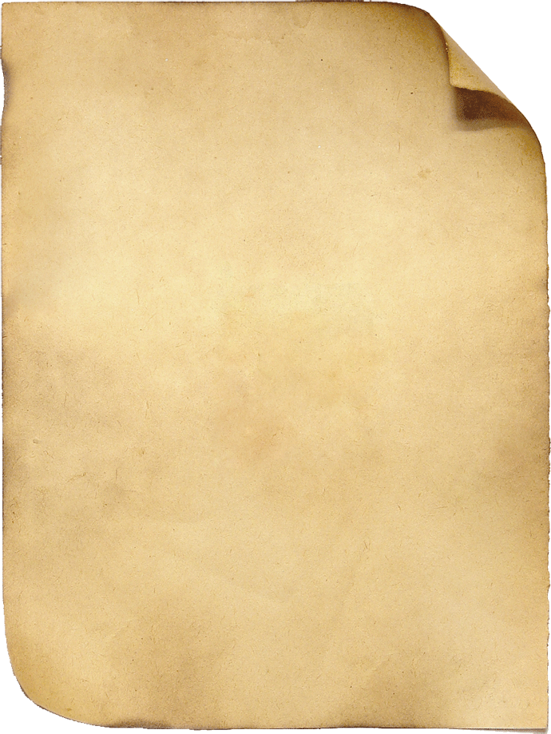

а́нуч (о́нуч)-длинная широкая полоса из холста или шерсти, которой обматывали ноги, когда обували лапти. ''Хадили у лаптях абуты, анучами ноги абёрнуты, анучи суконные и из волны''. (Трх., Крут., Хрш., Грд., В-Чуф.).
бахи́лы-обувь. '' Все прыгали па ваде в бахилах''. (Грд.)
башмаки́-обувь. '' Все прыгали па ваде в бахилах''. (Грд.)
бо́тики-тёплая кожаная обувь, короче сапог. ''Ботиками называли обувь, сапог тада мала была''. (Грд., В-Чуф., Хрш.).
бо́ты-тёплая кожаная обувь, короче сапог. ''Ботиками называли обувь, сапог тада мала была''. (Грд., В-Чуф., Хрш.).
бу́рки-сапоги из тонкого войлока. ''Бурки шили, их настилали ватою''. (В-Чуф.).
ва́ленки-зимняя обувь, сваленная из шерсти. ''Валенки в нынешний гот наваляют на скозны скольки''. (Грд., В-Чуф., Трх., Ргвт., Знам., Хрш., Шат., Фдс., Чрн.).
ва́рьга-вязаное изделие для рук, как варежки. ''Патом ис пряжи вязали наски, чулки, варьги''.
водоворо́тка-это новообразование от ''водолазки''- тёплая мужская и женская одежда, типа свитера, с воротником и ''косоворотки''- мужская рубашка со стоячим воротником, застёгивающимся сбоку. ''Бардовая – это вадаваротка, а сверху другая сарочка, атуда была видно вадаваротку'' (Стл.).
гама́н-карман, деталь мужской и женской однажды. Например, на фартуке обязательным элементом был карман. ''Кабы гаман был паболе''. (Знам.).
жаке́т-мужская одежда без рукавов, надеваемая поверх рубахи. Шился он из тканей фабричного производства – шерсти, сукна, полубархата. Шился на подкладке из коленкора или самотканого холста, часто грубого, плохо отбеленного. ''Адёшку сашили, ну какой-ить жакетишка'' (Пот.).
карту́з-мужской головной убор, то же, что и фуражка. ''Должно быть снимать картус и поклониться''. (Хрш.).
ка́танки-зимняя обувь, сваленная из шерсти. ''Авец стригли, из авечьей шерсти катали валенки, ани тёплые были, и беленькие, и чёрненькие - какие авечки, такие и катанки.'' (В-Чуф.).
кафта́н-мужская верхняя долгополая одежда, шились они из домотканого серого сукна, на праздничные кафтаны шло синее, белое или чёрное сукно. Зимние кафтаны шили из овчины и сверху покрывали сукном. ''Кафтан-ну эта мужики адивались ву этом'' (В-Чуф.).
косоворо́тка-мужская рубашка со стоячим воротом, застёгивающимся сбоку. ''Касаваротка – эта рубашка'' (Грд., В-Чуф.).
косы́нка-женский летний головной убор. ''Была касинка белая, как кипень, вышитая кругом''. (Ргвт.).
ко́фта-короткая женская одежда обычно носимая с юбкой. ''Бабам юбки, кохты.'' (Нзм., Хрш., В-Чуф., Грд., ДПол.).
кума́к-самотканый красный пояс. ''Эта падпаясывались – красный, тот тканый кумак''. (В-Чуф.).
ла́пти-плетёная обувь, охватывающая только ступню ноги. "Пляли лапти из лыка''. (Шат., Чрн., Хрш. Хорошилово, В-Чуф., Ргвт., Грд., Стл.).
лих́форма-один из видов повседневной женской одежды. ''А повседневная - эта вот адежда, сами шили, ну та лихформа''. (Грд., Срк.).
лохмо́тья-старая изношенная одежда. ''Все адивались в лахмотья, пряли да адивались''. (Кзч., Грд., Трх., Скв.).
матро́ска-матросская блуза с большим прямым отложным воротником.
нагру́дник-Название передник употребляется только в с. Верхнечуфичево, также в говоре этого села бытует наименование нагрудник: ''Нагрудник - ну эта хвартук''.
обо́рочка-1. Верёвочка, которую использовали вместо ремня, подвязки.''Аденешь зимой партки, паверх тюни, завяжешь аборачки вакруг ноги''. (Шат., Трх.).
2. Свитая верёвка, вплетаемая в лапти для их большей прочности. ''На работу хадили в лаптях, такие пляли из аборак, аборашные были лапти''. (Грд., Ргвт.).
панё́ва-женская юбка из шерсти, вышитая разноцветными нитками. ''У них панёвы такие разузоренные были.Эта панёва- эта юбка'' (Ргвт., Пот., Трх., Змв.).
па́ниток-рубаха, которую носили в будни, на работу. ''Панитками- эта будняшние и так хадили на работу''. (Ргвт.).
па́рочка-женская праздничная летняя одежда (кофта и юбка). Шили парочку из атласа, шелка, батиста, шерсти, ситца, сатина. Из дорогих тканей шили праздничные и свадебные парочки, из ситца - повседневные. ''А на празники летам пакупали парачки''. (Грд.).
па́тсмены-летняя обувь для бедных. ''Летам хадили у патсменах, эта пахуже люди, пабяднее''. (В-Чуф.).
пере́дник-женская одежда, защищающая перед платья от загрязнения. ''Передник- эта фартук. Эта щас хвартуками завут, а раньше звали передниками''. (В-Чуф.).
пинжа́к-однобортная куртка с маленьким стоячим воротником. Шили их из холста, нередко подбивали ватой. ''Шились пинжаки, сами ткали'' (Трх.).
пи́ск-женская ночная рубашка. ''Писк называлася рубаха, ночная рубаха тада''. (В-Чуф.).
плато́к-женский головной убор. ''Платки насили бальшие'' (Незн.).
плю́шка-женская верхняя одежда из плюша, укороченная и приталенная, фабричного производства. ''Ну если плюшка была, то эта роскашь, их в праздник надевали'' (Кот., Трх., Грд.).
поддё́вка-верхняя праздничная мужская и женская одежда, которую шили из сукна домашней выработки или чёрного, синего сукна фабричного производства, на подкладке, а для зимы на кудели, напрядённой шерсти на вате. ''Подёфки назывались шо шились тожа. Ну такая, ну счас пиджаки''(Грд).
подпая́ска-женский пояс. Пояса были очень разнообразны: шерстяные, тканые или плетёные. Имели пояса разную ширину и длину. ''В виде пояса, и называлась патпаяска, и эти канцы висели разукрашеные на панёве''. (Ргвт.).
подста́вка-нижняя часть женской рубахи.
подшта́нники-мужское нижнее бельё, одеваемое под штаны. ''Раньше партками звали, а патом - патштанниками, пат штаны адивали''. (Ргвт., Трх., Знам., В-Чуф.).
подъю́бник-юбка, которая одевается под основную юбку. '' Тонкие такие ткали, мы их шили и падъюбники''. (Нзм.).
полбати́нки-летняя обувь у богатых. ''Летам хадили у патсменах, у полбатинках''. (В-Чуф.).
полуша́лочка-шаль меньшего размера. ''Платочки были, полушалочки были''. (Грд.). Значение приставки (полу-) в данном слове – часть от целого или что-то меньшего размера.
полушу́бок-короткая до колен шуба из овчины. ''Шились полушалка девкам и ребятам'' (Хрш., В-Чуф., Грд., Шат., Крут.). Приставка полу- в данном слове означает часть от целого или что-то меньшего размера.
порто́чки-детская длинная рубашка. ''Нашьют платица детям - парточки''. (Ргвт.).
порты́-мужское нижнее бельё, надеваемое под штаны. ''Сашьют эти штаны, как партки и так хадили''. (Шат.).
портя́нка-кусок ткани для обматывания ноги под лапти. ''Я ва так сажусь, ва так ноги абарачиваю, и у лаптях иду''. (Грд., Пот.).
поста́вка-нижняя часть женской рубахи.
пости́лка-шапочка или небольшой тёплый платок, который одевали на голову под шаль. ''Шали были, и так пастилка''. (Трх.).
поя́сак-верхняя одежда, типа куфайки. ''Зимой мужики и бабы насили паясак'' (Чернянка).
руба́ха-одежда у мужчин и женщин, которую надевали прямо на тело. Основным материалом для рубахи служил льняной и конопляный холст домашнего производства. ''А бабы бабы сабе рубахи халстинные, рукава широ кие''. ''Мужики тожа хадили у рубахах''. (Пот., Грд., Шат., Трх., Чрн., Знам., Нзм., Змв., Хрш., Ргвт.).
рукави́ца-элемент, который надевали зимой на руки. Слово рукавица, сложенное из двух слов: ''рука'' и ''вить'', то есть обвивать руку. Отмечено оно и в оскольских говорах в значении «вязаные из шерсти варежки»: ''Ну рукавица, ани эта варюшки'' (В-Чуф., Трх., Хрш.).
сапоги́-кожаная не очень высокая обувь, охватывающая голени. ''Сапошки такие шили, такие не очень высокие''. (Знам., Хрш.).
сапо́жки-кожаная не очень высокая обувь, охватывающая голени. ''Сапошки такие шили, такие не очень высокие''. (Знам., Хрш.).
сарафа́н-женская одежда с вырезом без рукавов. Шили сарафаны из домашней шерсти или из сукна, окрашенного в чёрный цвет. ''Энти (девушки) летам хадили в ситцевых сарахванах''. (Чрн., Трх., Ргвт.).
спо́дники-мужское нижнее бельё. Комплект: лёгкая рубаха и подштаники. ''Сподники - эта тада назывались рубаха и патштанники.'' (Трх., В-Чуф.).
ста́н-Верхняя часть женской рубахи.
торго́вая руба́ха-рубаха фабричного производства, купленная в магазине, предназначена для праздника. ''Вот какая ищо, торговая - эта праздничная''. (Ргвт.).
тукра́инка-то же, что и кофта. ''Наряд был : чёрные юбки шили, вышивали кофтачки- тукраинками называлися.'' (Грд.).
тулу́п-зимняя верхняя одежда, обычно сшитая из овчиных шкур. ''Тулупы из авечье шкуры. Девка - та палучше адевалася. Ей новенький тулупчик'' (В-Чуф.).
фалду́н-разновидность верхней осенне-весенней одежды. Зимняя одежда. ''Зимой у людях были хвалдуны'' (Хрш.).
фа́ртук-передник. ''(Как назывался передник?) -Да, хвартук'' (Крут., Трх., В-Чуф., Чрн., Ргвт., Грд.).
халя́вки-носок, у которого нет нижней части: носка и пятки. ''Халявки вязали, носки из шерсти рутся - их тада.'' (В-Чуф.).
хапу́н-одежда в форме трапеции. ''О, как хапун, у хапуне собратая''. (Ргвт.).
хва́рни-варежки, рукавицы. ''Хварни-ну сейчас рукавички называют''.
череви́чки-женская узконосая обувь, плелись крючком или на спицах. '' Хадили мы раньше у черевичках. Черевички эти плялись крючком или на спицах''.
чикме́нь-осенне-весенняя верхняя одежда из чёрной шерсти, которую носили и мужчины, и женщины. ''Чикмяни осенью насили, вясною, чикмяни были шерстяные, пряли чёрные'' (Ргвт.)
чулки́-вязаные из шерсти длинные носки до колена. ''Из шерсти пряли, вязли, вязли насочки чёрные, а халывкм белые, вязали тёплые - эт самое чулки.'' (Ргвт., Грд., Чрн., Пот., Знам., Хрш., Трх.).
чу́ни-летняя обувь крестьян, плетёная из конопли. ''Были чуни да лапти из лыка, а тюни из канапли''. (В-Чуф., Грд., Трх., Срк., Стл.).
ша́ль-большой тканый или вязаный платок. Вязали их овечьей шерсти и козьего пуха. ''Ну укрывалися тада, шали были''. (В-Чуф., Трх., Фдс.).
ша́пка-теплый головонй убор, края которого были вывернуты наружу, часто из шкуры молодого ягнёнка. Шапки были ''крупчатые'' и ''барашковые''. ''Шили сабе из авчины крупчатые, барашковые шапки''. (Трх.).
шу́ба-зимняя верхняя одежда, обычно сшитая из овчиных шкур. ''Зимой шубы из овчин'' (Хрш.)
ю́бка-женская одежда, сшитая из домотканой шерсти, сукна и холста. ''Вот мая мать хадила в юбке''. (Ргвт., Знам., Пот., Грд., Хрш.).
Амба́р – сарай для хранения обмолоченного зерна.
Бо́ров – дымоход печи, ход в ее верхней части, идущей к боровку; самый переход из печи в трубу.
Ба́з – скотный двор, крытый или некрытый, при доме или за селением.
Бо́чка – 1. Емкость из дерева; 2. Деревянная или металлическая емкость с двумя днищами.
Бочо́нок – маленькая бочка.
Ваначка – посуда для сбора и хранения молока и молочных продуктов.
Ведро́ – емкость для переноса и хранения воды.
Ве́рх – 1) Деревянная вытяжная труба для дыма;2) Плетенная из камыша или хвороста и обмазанная глиной вытяжная труба (раньше устраивалась в сенях);3) стропила с уложенным на них кроющим материалом (соломой, железом и т.п.).
Весёлка – деревянное приспособление для размешивания теста.
Весло́ – деревянная лопатка на длинной ручке, предназначенная для размешивания теста.
Вор́к – это сарай, отдельно возводимый или пристраиваемый к основному сараю, для постоянного содержания овец.
Времянка – строения, называемые времянками, по словам старожилов, появились в селе лишь в 50-е годы XX века, и их уже не использовали для хранения сена или сельскохозяйственного инвентаря.2) В 60-70 годы времянки стали ставить как особые строения во дворах крестьянских комплексов. 3) В настоящее время они представляют собой небольшие постройки с земляным полом и духовой печью для приготовления пищи в летний период.4) Постройка для временного проживания, более благоустроенная, чем пунька.
Выход – к наименованиям построек, предназначенных для хранения сельскохозяйственной продукции, относятся.
Горница – наименование жилого помещения. «Чистое жилое помещение»; Что означает слово горница: а) любая комната в многокомнатном доме;б) парадная комната; в) неотапливаемое помещение для имущества и спальня летом…
Горнишна комната – «большая часть жилой камеры», «чистая».
Горно – огонь на открытом месте или углубление в земле, используемое в качестве летней печи.
Горшки – 1) гончарных изделий без дна, по форме напоминавших кувшины и предназначенных для вывода печного дыма из жилой камеры.
Горшок – округлый глиняный сосуд для приготовления и хранения пищи.
Груба – другие печи для отопления помещения (лежанка у печи).
Грубка – 1) Другие печи для отопления помещения: грубка; 2) Лежанка у печи; 3) Небольшая железная печь для обогревания и приготовления пищи.
Дéжка – небольшая емкость для замешивания теста.
Даёнка – посуда для сбора и хранения молока и молочных продуктов.
Двойник – наименования жилой постройки; «постройка большого размера»; «старая постройка»; «каркасно-столбовая постройка».
Двойничок – наименования жилой постройки; «небольшая постройка»; «каркасно-столбовая постройка».
Двор – наименования жилищно-хозяйственного комплекса.
Дежá(дéжа) – деревянная небольшая кадушка для замешивания теста.
Дежник – кусок полотна, которым накрывали дежу.
Доливка – в южных же говорах, восходящих к украинскому языку, глинобитный пол называют долúвкой.
Дом/домик – наименования жилой постройки; «постройка большого размера»; «новая постройка»; «каркасно-столбовая постройка»; хата и дом в говоре с. Городище – не разновидности жилой постройки, а часть такой постройки.
Жарница – сковорода: посуда, используемая для жарки пищи на огне.
Жаровня– сковорода: посуда, используемая для жарки пищи на огне.
За́кром – отгороженное место в амбаре для ссыпки зерна.
Завалинка – к наименованиям деталей жилой постройки.
Загнет/загнета/загнетка – наименования отопительных сооружений и их частей.
Загон – к наименованиям земельных участков, расположенных при доме, в говоре Городища относятся синонимы огород и загон: у обоих слов отмечается значение «земельный участок возле дома, на котором выращивают овощи, зерновые и т.п.». В других же оскольских говорах обнаружено в указанном значении лишь слово огород.
Загрядка – полка от печи до противоположной стены; Жердь по краю печки, брус у бокового внешнего края.
Заку́та/закýтка – отгороженная часть сарая, в которой содержатся какие-либо домашние животные.
Закуток/закуточек – укромный уголок в каком-н. помещении.
Зал – «наименования парадной комнаты», включает семы «бóльшая часть жилой камеры», «чистая».
Заслонка/заслонь – железный лист с ручкой, закрывающий входное отверстие печи, а также вообще приспособление для закрывания отверстий.
Земь – это глинобитный, земляной пол.
Извара – емкость для переноса и хранения воды.
Ко́мень/ко́мин/ко́монь – наименования отопительных сооружений и их частей.
Кóмната/комнáта – «отгороженное пространство специального назначения», поскольку это наименование применяется для обозначения и отгороженного пологом угла, и части жилой камеры за шкафом, при этом стен как таковых у комнаты может и не быть.
Кóмнать – в качестве соответственного явления, противопоставленного на уровне плана выражения говору с. Городище, в пооскольских говорах сел Потудань и Курское, наряду со словами горница и зал, для обозначения бóльшей и чистой части жилой камеры нами зафиксировано слово кóмнать.
Кýхлик – посуда в виде кувшина без горла, предназначенная для приготовления похлёбки.
Кýхличек – тоже, что и кухлик.
Кадушка – небольшая кадка, которую использовали для замеса теста.
Камин – небольшая печь с плиткой для обогревания и приготовления пищи.
Каток – приспособление для облегчения доставания или становления в печь горшков, чугунов, посредством катания.
Ква́сница – деревянная кадушка для закваски и хранения кваса.
Кладовка – небольшая кладовая, чулан.
Клеть – синонимом к слову пунька в значении «строение для хранения вещей и для временного или постоянного ночлега» в современных оскольских говорах выступает наименование клеть.
Клуня – к наименованиям построек, предназначенных для хранения сельскохозяйственной продукции.
Клуняка – большие размеры постройки нашли языковое отражение в наименовании клун/яка, зафиксированном только в говоре с. Городище. В то же время в оскольских говорах не зафиксировано устойчивых словосочетаний слова клуня с прилагательным, выражающим значение «небольшой размер», что обусловлено постоянным признаком «большой», присущим обозначаемой реалии – молотильному сараю.
Колидор – помещения между жилой камерой, хозяйственными помещениями и улицей.
Комна́тка – ЛСГ «Наименования помещения, служащего для сна» включает синонимы комнáтка, светёлка, спальня (спаленка). Наименования комнáтка и светёлка отмечены в речи информантов старше 70 лет, люди моложе этого возраста для обозначения этой же реалии уже используют лексемы спальня или спаленка.
Коридор – помещения между жилой камерой, хозяйственными помещениями и улицей.
Коридорчик – помещения между жилой камерой, хозяйственными помещениями и улицей; расположенная перед входом в дом закрытая, застекленная пристройка, имеющая площадку со ступеньками.
Корчашка – посуда для сбора и хранения молока и молочных продуктов.
Кружок – наименования отопительных сооружений и их частей.
Крыльцо – ступеньки перед входом в дом, под навесом или без него; «невысокая ступенька без боковых стенок» и «небольшая пристройка без площадки, состоящая из нескольких ступенек и боковых стенок») развивалась по мере изменения техники строительства.
Крынка – емкость для хранения молока .
Крыша – к наименованиям деталей жилой постройки.
Кувшин – емкость для хранения молока .
Кувшины́– гончарных изделий без дна, по форме напоминавших кувшины и предназначенных для вывода печного дыма из жилой камеры.
Курник/ курятник – специальный сарай для птицы: в говоре с. Городище употребляется наименование кур/ятник, в соседних же старооскольских говорах (Потудань, Роговатое и др.) – кyрник. Таким образом, эти слова в старооскольских говорах являются междиалектными синонимами.
Кут – угол против печи или рядом с печью.
Кухня – наименований жилых и хозяйственных построек; отдельное помещение (в доме, квартире) с печью, плитой для приготовления пищи.
Летняя (кухня) – жители же украинских поселений постройку для временного проживания называют летней.
Макитра – посуда для сбора и хранения молока и молочных продуктов.
Маслёнка – ручная маслобойня, высокая узкая кадушка с крышкой, в которую пропущена палка с крестом.
Маслобойка – предмет кухонной утвари, в виде кадки с отверстием и мутовкой внутри, для сбивания из молока или сливок, животного масла.
Махотка – глиняный сосуд для приготовления и хранения пищи.
Миска – посуда, из которой ели полужидкую и густую пищу, глубокая тарелка.
На потолку – на чердаке, верхнее внутреннее покрытие помещения.
Овча́рник/овча́рня – Овчaрник или овчaрня, абсолютные синонимы в говоре с. Городище, –сарай для содержания овец. Слово овчарня входит в состав русского литературного языка , овчарник – лексема диалектного языка, для которой в русских говорах характерна полисемия, однако данное слово чаще выступает в качестве названия специального помещения для овец.
Огорóд – к наименованиям земельных участков, расположенных при доме, в говоре Городища относятся синонимы огород и загон: у обоих слов отмечается значение «земельный участок возле дома, на котором выращивают овощи, зерновые и т.п.». В других же оскольских говорах обнаружено в указанном значении лишь слово огород.
Опечек – наименования отопительных сооружений и их частей; Верхняя плоскость печи, на которой лежат, спят.
Пýнька – сарай для хранения различной утвари и одежды, а также и для временного, а иногда и постоянного проживания семейной пары.
Пелена – к наименованиям деталей жилой постройки: Если у крыши информанты называют какие-либо детали, являющиеся ее частями, например “пелена у крыши”, “верх крыши”, то верх не разделяется на составляющие элементы. В говоре с. Городище слово пелена “край крыши, сделанный из пучков соломы” стало базой для образования глагола опеленять, с помощью которого называют процесс, связанный с сооружением края крыши.
Печка/печурка/печь – наименования отопительных сооружений.
Плита/ плитка– кухонная печь с конфорками в верхней металлической доске.
Погреб – устроенная в земле яма, имеющая над землей сруб и крышку, для хранения молочных продуктов, овощей.
Под /подпе́чка – наименования отопительных сооружений и их частей.
Подвал – помещение в здании, расположенное ниже уровня земли.
Подворье/подзагнета/подзагнетка/подзагнеток – наименования жилищно-хозяйственного комплекса.
Подойник – посуда для сбора и хранения молока и молочных продуктов.
Подполье – помещение под полом, подвал.
Пол – 1) «деревянный пол (в отличие от земляного, глинобитного)»; 2) «нижняя поверхность в доме: деревянная или земляная, глинобитная».
Полоник/половник/полоуник – большая разливная ложка
Поместье – первоначально им называли земельный надел, выделяемый служилым людям «для прокорму»; Наименования жилищно-хозяйственного комплекса.
Потолок – 1) верхнее внутреннее покрытие помещения; 2) помещение между перекрытием и крышей в постройке с четырехскатной крышей, чердак. Второе значение, собственно диалектное, развилось у слова в результате метонимического переноса по смежности, поскольку нижней границей описанного пространства является потолок, выполненный как перекрытие дома.
Пятисте́нник /пятистенка /пятисте́нок/пятистеночка – деревенская изба, разгороженная внутри рубленой бревенчатой стеной
Решето - приспособление для просеивания чего-либо.
Рогач – приспособление в виде полумесяца с длинной ручкой, с помощью которого вынимали горшки из печи.
Рогачик – небольшой ухват.
Сара́ечек /сара́ишко /сарай/сарайчик – крытое нежилое строение, обычно без потолочных перекрытий.
Светёлка – помещение, служащее для сна.
Светлица – в старину: светлая парадная комната в доме.
Сени /сенцы – помещения между жилой камерой, хозяйственными помещениями и улицей.
Сито – обруч с натянутой сеткой для просеивания муки.
Сковорода – посуда, используемая для жарки пищи на огне
Скулы – наименования отопительных сооружений и их частей.
Ступа/толкач/толкушка/толченок – приспособление для толчения.
Творило – хозяйственные постройки.
Усадьба – отдельный дом с примыкающими к нему строениями, угодьями.
Устье – наименования отопительных сооружений и их частей
Ха́та/ ха́та-связь/хатенка /хатка/хатушка/хатунька – крестьянский дом.
Хлев – помещение для скота (коров, телят, овец), а также для крупной домашней птицы.
Цыбарка – это огромная емкость типа кастрюли.
Чапля – крючок на рукоятке, которым из печи вынимают сковороды.
Чашка – глубокая тарелка для жидких блюд.
Чердак – помещение между перекрытием и крышей в постройке с двускатной крышей.
Черепушка – любая глиняная посуда, предназначенная и для приготовления пищи и для ее употребления.
Черпак – разливная ложка.
Чугун – литой чугунный горшок для варки.
Чугунок – горшок из чугуна для приготовления пищи.
Чулан – помещение в доме, служащее кладовой; клеть или часть сеней в крестьянской избе.
Юшка – наименования отопительных сооружений и их частей – часть дымохода.
Ясли – ящик для корма скоту
|